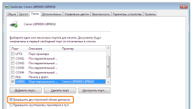

Если не удается выполнить печать, когда принтер подключен к компьютеру с помощью USB-кабеля, установите проблему, ответив на приведенные ниже вопросы.
<Вопрос 1> ВКЛЮЧЕН ли принтер? (Горит ли индикатор  (Питание)?)
(Питание)?)
(Питание)?)|
ВКЛ.
|
К разделу <Вопрос 2>
|
|
ВЫКЛ.
|
ВКЛЮЧИТЕ принтер.
|
|
Не удается ВКЛЮЧИТЬ
|
<Вопрос 2> Мигает ли индикатор  (Бумага)?
(Бумага)?
(Бумага)?
|
Мигает
|
Загрузите бумагу надлежащим образом, а затем нажмите клавишу [
 ] (Бумага). ] (Бумага). |
|
Не мигает
|
К разделу <Вопрос 3>
|
<Вопрос 3> Правильно ли подсоединен USB-кабель?

|
Подсоединен
|
Попробуйте выполнить указанное ниже.
Если используется концентратор, подключите принтер напрямую к компьютеру.
Если используется длинный USB-кабель, замените его коротким.
Если есть другой USB-кабель, используйте его.
 Если печать по-прежнему не удается выполнить, перейдите к разделу <Вопрос 4>. |
|
Не подсоединен
|
Подсоедините кабель надлежащим образом.
|
<Вопрос 4> Возможна ли печать пробной страницы в Windows?
|
Печать возможна
|
Нет неполадок с принтером и драйвером.
Проверьте настройки печати в приложении.
|
|
Печать невозможна
|
К разделу <Вопрос 5>
|
<Вопрос 5> Правильно ли выбран порт, который требуется использовать?
|
Выбран
|
К разделу <Вопрос 6>
|
|
Не выбран
|
Выберите правильный порт.
|
|
Не удается найти порт, который необходимо использовать.
|
Установите драйвер принтера снова.
|
<Вопрос 6> Включена ли двунаправленная связь?

|
Включена
|
К разделу <Вопрос 7>
|
|
Выключена
|
Включите двунаправленную связь и перезапустите компьютер и принтер.
|
<Вопрос 7> Проверьте указанное ниже.
Отключите резидентное программное обеспечение, включая программные средства защиты данных.
Если другие устройства, подключаемые с помощью USB-кабеля, подключены к компьютеру, отключите ненужные.
Если драйверы или программное обеспечение других устройств, подключаемых с помощью USB-кабеля, установлены на компьютере, удалите ненужные.
Подсоедините USB-кабель к другому USB-порту компьютера.
Подключите принтер к другому компьютеру с помощью USB-кабеля.
Если печать не выполняется, перейдите к разделу <Вопрос 8>.
<Вопрос 8> Установите драйвер принтера еще раз.
Если печать не выполняется, перейдите к разделу <Вопрос 9>.
<Вопрос 9> Удалите драйвер класса USB, а затем установите драйвер принтера еще раз.
Если печать не выполняется, обратитесь к местному уполномоченному дилеру Canon.